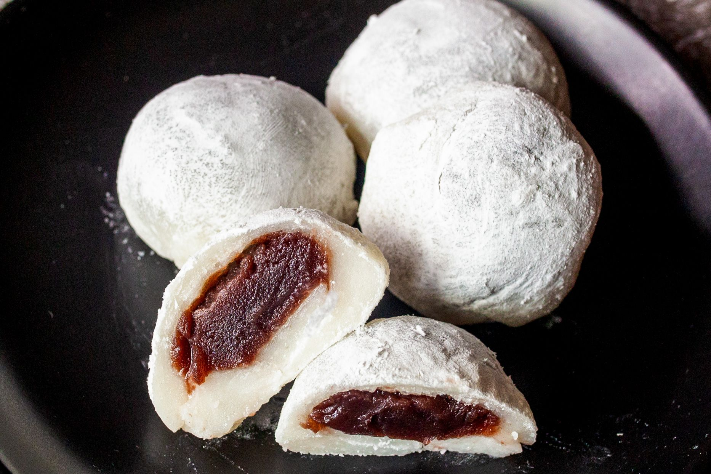

Mochi is a bun-shaped Japanese dessert made from sweet glutinous rice flour, or mochigome. It has a soft, chewy texture that is somewhat elastic. Mochi is often flavored with matcha (or green tea powder), which gives it a light green hue.
Gather all ingredients.
Step 2Wrap red bean paste in aluminum foil and place in the freezer until solid, at least 1 hour.
Step 3Mix glutinous rice flour and green tea powder thoroughly in a microwave-safe bowl.
Step 4Stir in water, then sugar; mix until smooth.
Step 5Cover the bowl with plastic wrap and microwave for 3 minutes 30 seconds.
Step 6Meanwhile, remove red bean paste from the freezer and divide into 8 equal balls. Set aside.
Step 7Remove rice flour mixture from the microwave. Stir and heat, covered, for another 15 to 30 seconds.
Step 8Dust a work surface with cornstarch. Roll about 2 tablespoons of hot rice flour mixture into a ball. Flatten the ball and place one ball of frozen red bean paste in the center. Pinch and press the dough around the bean paste until completely covered.
Step 9Sprinkle with additional cornstarch and place mochi, seam-side down, in a paper muffin liner to prevent sticking.
Step 10Repeat Step 6 to make remaining mochi.
Step 11Enjoy!